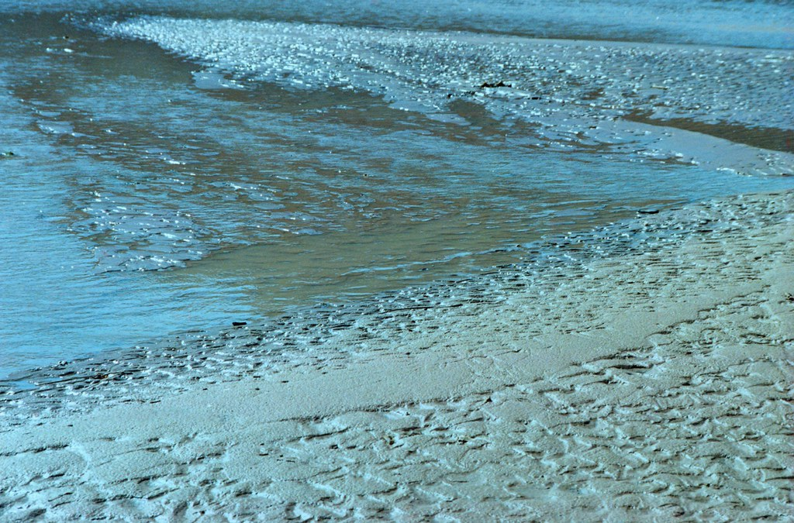
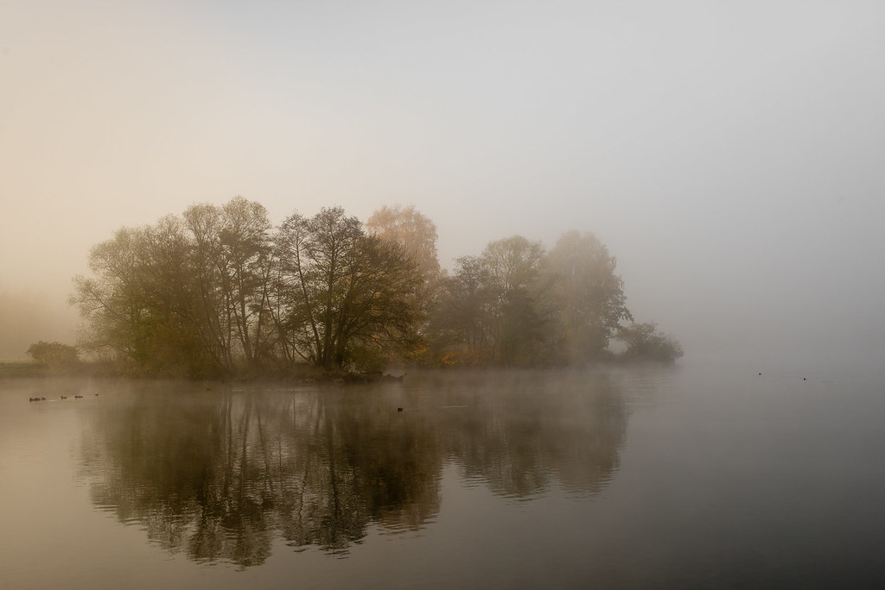
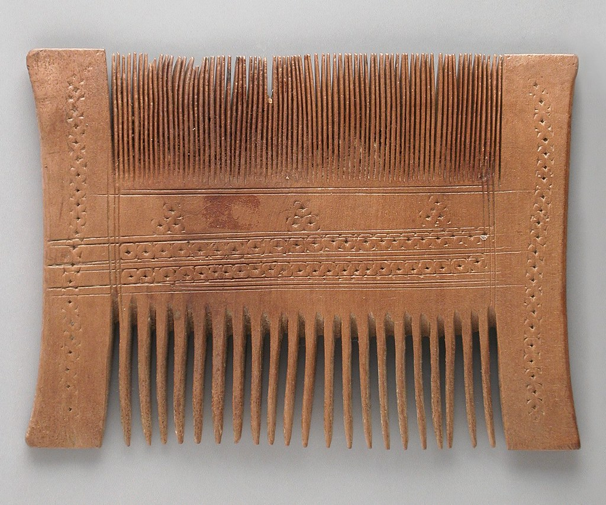

Concept
水のように、凪のように
Uisce, Calm Waters ― 片瀬海岸の波のない、静かな一日へ。


Our Name
「Uisce」という名前について
店名の「Uisce(イシュカ)」は、ゲール語で「水」を意味する言葉です。ウイスキーの語源としても知られる「uisce beatha(生命の水)」の語根にもなっています。
この店が構えるのは、江ノ島・片瀬海岸の海辺。そして入居するビルの名前は「by the river」。水にまつわる名前が重なったこの場所で、波のない穏やかな海面のような「凪」の時間を、髪とともに過ごしていただく場所になればという思いを込めています。

Atmosphere
凪のような空間を目指して
潮風や波音を感じる片瀬海岸の立地にあわせ、音・光・香りといった五感の心地よさを大切にした空間を目指しています。慌ただしい日常から少し離れて、凪のようにゆったりと過ごしていただける時間づくりを心がけています。

Styling
髪と水、流れとうるおい
髪と水には「流れ」「うるおい」「循環」という共通点があります。一人ひとりの髪質や生活リズムに寄り添いながら、無理のない自然な仕上がりを一緒に探っていくスタイリングを心がけています。まずはカウンセリングで、髪の状態やなりたいイメージをじっくりお伺いします。
Treatment
丁寧な施術について
施術には上質な薬剤を使い、一つひとつの工程を丁寧に行うことを大切にしています。使用する薬剤やメニューの詳細については、Instagramまたは店頭にてお気軽にお問い合わせください。